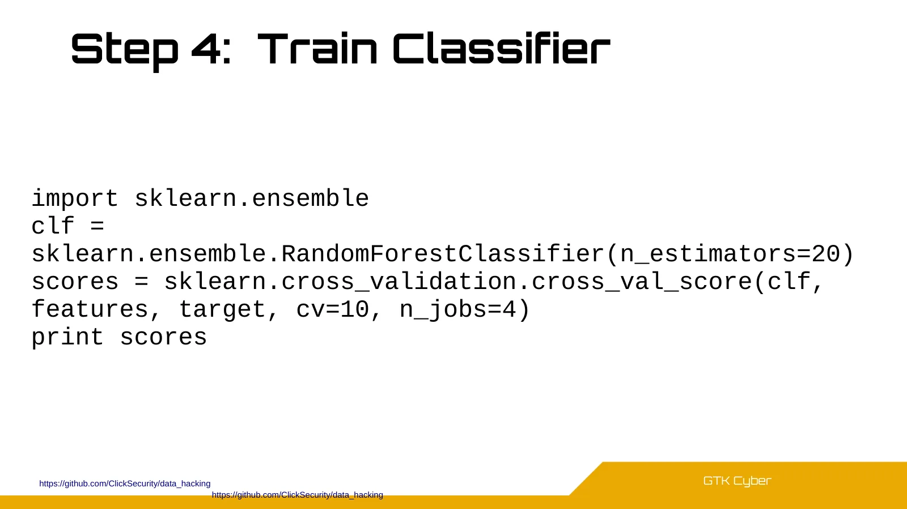
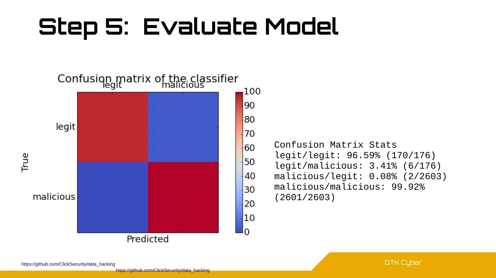

![GTK Cyber Criterion for best splits: Impurity Information Gain = entropy(parent) - [weighted average]entropy(children) Which feature below gives the best split? entropy(parent)=1.](pages/p034.webp)


![GTK Cyber Confusion Matrix target = [1,0,0,1,1,1,1,1,1,0,0,0,0,0,0,0] target_pred = [0,1,1,0,0,1,1,1,1,0,0,0,0,0,0,0] print(confusion_matrix(target, target_pred)) [[7 2] [3 4]] 1 0](pages/p072.webp)
![GTK Cyber Accuracy accuracy = accuracy_score(target, target_pred) [[7 2] [3 4]] 1 0 0 1 Tr u e ta rg e t Predicted target Accuracy = (TP + TN)/ N Quiz: Calculate by hand!](pages/p073.webp)
![GTK Cyber Accuracy accuracy = accuracy_score(target, target_pred) [[7 2] [3 4]] 1 0 1 Tr u e ta rg e t Predicted target Accuracy = (TP + TN)/ N = (7+4)/16 = 0.6875](pages/p074.webp)

![GTK Cyber Precision precision_class = precision_score(target, target_pred, average = None) precision_avg = precision_score(target, target_pred, average = 'binary') [[7 2] [3 4]] 1](pages/p076.webp)
![GTK Cyber Precision precision_class = precision_score(target, target_pred, average = None) precision_avg = precision_score(target, target_pred, average = 'binary') [[7 2] [3 4]] 1](pages/p077.webp)


![GTK Cyber Recall recall_class = recall_score(target, target_pred, average = None) recall_avg = recall_score(target, target_pred, average = 'binary') [[7 2] [3 4]] 1 0 0 1 Tr ue ta](pages/p080.webp)
![GTK Cyber Recall recall_class = recall_score(target, target_pred, average = None) recall_avg = recall_score(target, target_pred, average = 'binary') [[7 2] [3 4]] 1 0 0 1 Tr u e ta](pages/p081.webp)


![GTK Cyber Quiz: compute metrics for each class of 3-class confusion matrix target = [1,0,0,1,1,1,1,1,1,0,0,0,0,0,0,0,2,2,2,2,1,1,2,0,0,0,0,0] target_pred = [0,1,1,0,0,1,1,1,1,0,0,0](pages/p088.webp)
![GTK Cyber Quiz: compute metrics for each class of 3-class confusion matrix target = [1,0,0,1,1,1,1,1,1,0,0,0,0,0,0,0,2,2,2,2,1,1,2,0,0,0,0,0] target_pred = [0,1,1,0,0,1,1,1,1,0,0,0](pages/p089.webp)
![GTK Cyber Where is the biggest crime scene? [[7 2] [3 4]] [[10 0] [5 1]] [[0 4] [1 11]] A B C Confusion matrices all with equal accuracy 0.6875!!! How about precision and recall?](pages/p090.webp)
![GTK Cyber Where is the biggest crime scene? [[7 2] [3 4]] [[10 0] [5 1]] [[0 4] [1 11]] A B Precision: [ 0.7 0.7] Recall: [ 0.8 0.6] Precision: [ 0 0.7] Recall: [ 0 0.9] Precision:](pages/p091.webp)


![GTK Cyber Grid Search param_grid = [ {'C': [1, 10, 100, 1000], 'kernel': ['linear']}, {'C': [1, 10, 100, 1000], 'gamma': [0.001, 0.0001], 'kernel': ['rbf']}, ]](pages/p113.webp)
![GTK Cyber Grid Search # use a full grid over all parameters param_grid = {"max_depth": [3, None], "max_features": [1, 3, 10], "min_samples_split": [2, 3, 10], "min_samples_leaf": [](pages/p114.webp)
![GTK Cyber Random Search # specify parameters and distributions to sample from param_dist = {"max_depth": [3, None], "max_features": sp_randint(1, 11), "min_samples_split": sp_randi](pages/p115.webp)


![GTK Cyber Auto ML https://github.com/EpistasisLab/ tpot from tpot import TPOTClassifier clf = TPOTClassifier(search_space="linear-light", scorers=["roc_auc"], scorers_weights=[1.0]](pages/p142.webp)






